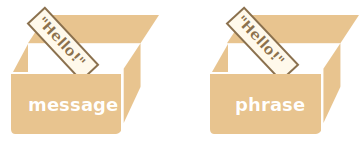

对象与原始类型其中一个基本的区别是：对象“通过引用的形式”被存储和拷贝。
原始类型值：字符串，数字，布尔值 —— 被“作为整体”赋值/拷贝。
例如：
let message = "Hello!";
let phrase = message;结果我们就有了两个独立的变量，每个都存储着字符串 "Hello!"。

对象不是这样的。
变量存储的不是对象自身，而是该对象的“内存地址”，换句话说就是一个对该对象的“引用”。
下面是这个对象的示意图：
let user = {
name: "John"
};
这里，该对象被存储在内存中的某处。而变量 user 保存的是对此处的“引用”。
当一个对象变量被拷贝 —— 引用则被拷贝，而该对象并没有被复制。
例如：
let user = { name: "John" };
let admin = user; // 拷贝引用现在我们有了两个变量，它们保存的都是对同一个对象的引用：

我们可以用任何变量来访问该对象并修改它的内容：
let user = { name: 'John' };
let admin = user;
*!*
admin.name = 'Pete'; // 通过 "admin" 引用来修改
*/!*
alert(*!*user.name*/!*); // 'Pete'，修改能通过 "user" 引用看到上面的例子说明这里只有一个对象。就像我们有个带两把钥匙的锁柜，并使用其中一把钥匙（admin）来打开它。那么，我们如果之后用另外一把钥匙（user），就也能看到所作的改变。
对于对象来说，普通相等 == 和严格相等 === 是两个作用结果完全一样的运算符。
仅当两个对象为同一对象时，两者才相等。
这里两个变量都引用同一个对象，所以它们相等：
let a = {};
let b = a; // 拷贝引用
alert( a == b ); // true，都引用同一对象
alert( a === b ); // true而这里两个独立的对象则并不相等，即使它们都为空：
let a = {};
let b = {}; // 两个独立的对象
alert( a == b ); // false对于类似 obj1 > obj2 的比较，或者跟一个原始类型值的比较 obj == 5，对象都会被转换为原始值。我们很快就会学到对象是如何转换的，但是说实话，类似的比较很少出现，通常是在编程错误的时候才会出现这种情况。
那么，拷贝一个对象变量会又创建一个对相同对象的引用。
但是，如果我们想要复制一个对象，那该怎么做呢？创建一个独立的拷贝，克隆？
这也是可行的，但稍微有点困难，因为 JavaScript 没有提供对此操作的内建的方法。实际上，也很少需要这样做。通过引用进行拷贝在大多数情况下已经很好了。
但是，如果我们真的想要这样做，那么就需要创建一个新对象，并通过遍历现有属性的结构，在原始类型值的层面，将其复制到新对象，以复制已有对象的结构。
就像这样：
let user = {
name: "John",
age: 30
};
*!*
let clone = {}; // 新的空对象
// 将 user 中所有的属性拷贝到其中
for (let key in user) {
clone[key] = user[key];
}
*/!*
// 现在 clone 是带有相同内容的完全独立的对象
clone.name = "Pete"; // 改变了其中的数据
alert( user.name ); // 原来的对象中的 name 属性依然是 John我们也可以使用 Object.assign 方法来达成同样的效果。
语法是：
Object.assign(dest, [src1, src2, src3...])dest 是指目标对象。src1, ..., srcN（可按需传递多个参数）是源对象。dest 中。换句话说，从第二个开始的所有参数的属性都被拷贝到第一个参数的对象中。dest。例如，我们可以用它来合并多个对象：
let user = { name: "John" };
let permissions1 = { canView: true };
let permissions2 = { canEdit: true };
*!*
// 将 permissions1 和 permissions2 中的所有属性都拷贝到 user 中
Object.assign(user, permissions1, permissions2);
*/!*
// 现在 user = { name: "John", canView: true, canEdit: true }如果被拷贝的属性的属性名已经存在，那么它会被覆盖：
let user = { name: "John" };
Object.assign(user, { name: "Pete" });
alert(user.name); // 现在 user = { name: "Pete" }我们也可以用 Object.assign 代替 for..in 循环来进行简单克隆：
let user = {
name: "John",
age: 30
};
*!*
let clone = Object.assign({}, user);
*/!*它将 user 中的所有属性拷贝到了一个空对象中，并返回这个新的对象。
到现在为止，我们都假设 user 的所有属性均为原始类型。但属性可以是对其他对象的引用。那应该怎样处理它们呢？
例如：
let user = {
name: "John",
sizes: {
height: 182,
width: 50
}
};
alert( user.sizes.height ); // 182现在这样拷贝 clone.sizes = user.sizes 已经不足够了，因为 user.sizes 是个对象，它会以引用形式被拷贝。因此 clone 和 user 会共用一个 sizes：
就像这样：
let user = {
name: "John",
sizes: {
height: 182,
width: 50
}
};
let clone = Object.assign({}, user);
alert( user.sizes === clone.sizes ); // true，同一个对象
// user 和 clone 分享同一个 sizes
user.sizes.width++; // 通过其中一个改变属性值
alert(clone.sizes.width); // 51，能从另外一个看到变更的结果为了解决此问题，我们应该使用会检查每个 user[key] 的值的克隆循环，如果值是一个对象，那么也要复制它的结构。这就叫“深拷贝”。
这里有一个标准的深拷贝算法，它不仅能处理上面的例子，还能应对更多复杂的情况，它被称为 结构化拷贝算法。
我们可以用递归来实现。或者不自己造轮子，使用现成的实现，例如 JavaScript 库 lodash 中的 _.cloneDeep(obj)。
对象通过引用被赋值和拷贝。换句话说，一个变量存储的不是“对象的值”，而是一个对值的“引用”（内存地址）。因此，拷贝此类变量或将其作为函数参数传递时，所拷贝的是引用，而不是对象本身。
所有通过被拷贝的引用的操作（如添加、删除属性）都作用在同一个对象上。
为了创建“真正的拷贝”（一个克隆），我们可以使用 Object.assign 来做所谓的“浅拷贝”（嵌套对象被通过引用进行拷贝）或者使用“深拷贝”函数，例如 _.cloneDeep(obj)。